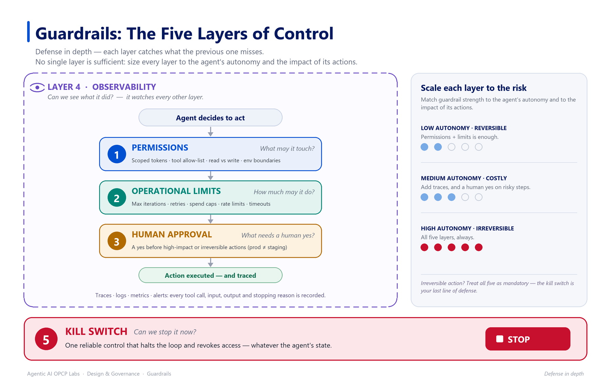

Garde-fous : les cinq couches de contr�le
Les garde-fous sont les contr�les qui bornent ce qu'un agent peut faire. Plus vous accordez d'autonomie (le spectre du matin), plus les garde-fous doivent �tre solides. Cette le�on pr�sente cinq couches compl�mentaires � pensez d�fense en profondeur, pas un simple interrupteur.

Objectifs p�dagogiques
- Nommer et expliquer les cinq couches de garde-fous
- Associer chaque couche � un contr�le concret sur opcp-explorer
- Combiner les couches en d�fense en profondeur
D�fense en profondeur
flowchart TD
L1[1. Permissions] --> L2[2. Limites op�rationnelles]
L2 --> L3[3. Approbation humaine]
L3 --> L4[4. Observabilit�]
L4 --> L5[5. Kill switch]Chaque couche rattrape ce que la pr�c�dente laisse passer. Aucune couche seule ne suffit.
Couche 1 � Permissions
Ce que l'agent est autoris� � toucher. Jetons restreints, listes d'autorisation d'outils, acc�s lecture seule vs lecture-�criture, fronti�res d'environnement (pr�production vs production). Sur opcp-explorer : un jeton limit� � apps:read et apps:write mais jamais billing:*, restreint � un projet.
Couche 2 � Limites op�rationnelles
Combien l'agent peut faire. Nombre max d'it�rations de boucle, plafonds de reprises/erreurs, budgets de jetons et de d�pense, limites de d�bit, d�lais d'horloge. C'est la forme appliqu�e des crit�res d'arr�t du matin. Sur opcp-explorer : � au plus 5 tentatives de d�ploiement, 10 minutes, X � de d�pense �.
Couche 3 � Approbation humaine
L� o� une personne doit dire oui. Un point de contr�le human-in-the-loop avant les actions � fort impact ou irr�versibles. Sur opcp-explorer : l'agent peut d�ployer en pr�production de fa�on autonome, mais la promotion en production exige l'approbation d'un op�rateur.
Couche 4 � Observabilit�
Pouvoir voir ce que l'agent a fait. Traces d'ex�cution structur�es, logs, m�triques et alertes � la trace que vous avez annot�e ce matin. Sans observabilit�, les autres couches sont inv�rifiables. Sur opcp-explorer : chaque appel d'outil et d�cision est journalis� avec entr�es, sorties et raison d'arr�t.
Couche 5 � Kill switch
La capacit� d'arr�ter l'agent imm�diatement. Un contr�le unique et fiable qui stoppe la boucle et r�voque l'acc�s, quel que soit l'�tat de l'agent. Sur opcp-explorer : une commande op�rateur qui met fin � la session de l'agent et invalide son jeton.
Les cinq couches en un coup d'�il
| Couche | Question � laquelle elle r�pond | Contr�le opcp-explorer |
|---|---|---|
| Permissions | Que peut-il toucher ? | Jeton restreint, liste d'outils |
| Limites op�rationnelles | Combien peut-il faire ? | Plafonds reprises/it�rations/d�pense |
| Approbation humaine | Qu'est-ce qui requiert un oui humain ? | Approbation avant production |
| Observabilit� | Peut-on voir ce qu'il a fait ? | Traces et logs structur�s |
| Kill switch | Peut-on l'arr�ter maintenant ? | Fin de session + r�vocation du jeton |
Points cl�s � retenir
- Cinq couches : permissions, limites op�rationnelles, approbation humaine, observabilit�, kill switch.
- Elles fonctionnent ensemble en d�fense en profondeur � aucune seule ne suffit.
- Dimensionnez chaque couche selon l'autonomie de l'agent et l'impact de l'action.